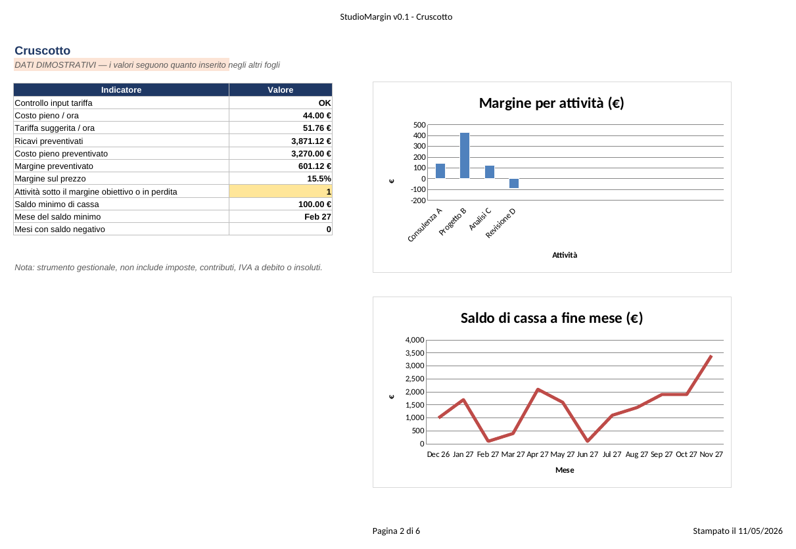
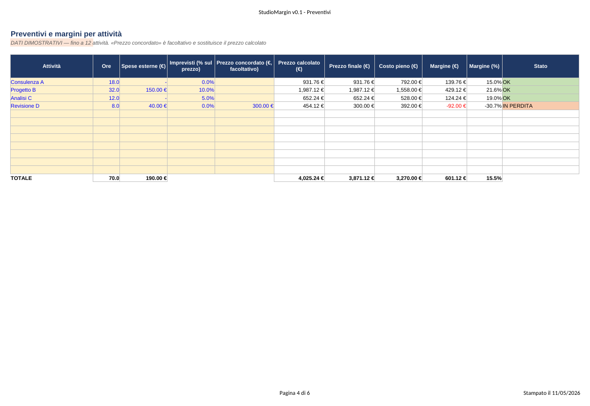
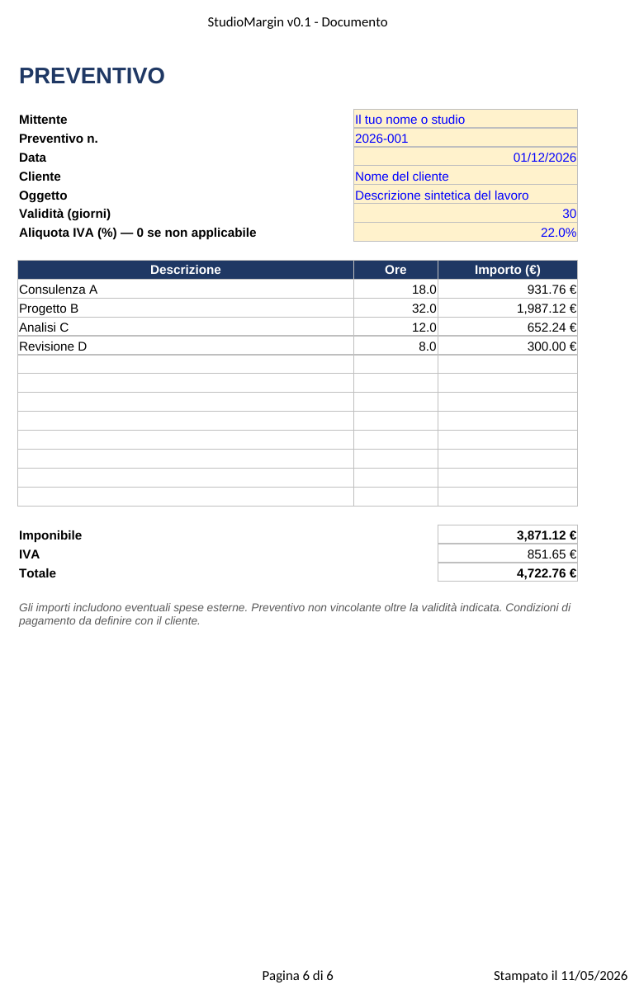

Cosa contiene
Tariffa
Dal compenso che vuoi ottenere, dai costi e dalle ore realmente vendibili ricava il costo pieno orario e la tariffa suggerita per un margine a tua scelta.
Preventivi
Fino a 12 attività con ore, spese esterne e maggiorazione per imprevisti. Segnala quelle sotto il margine obiettivo o in perdita.
Cassa a 12 mesi
Incassi previsti, uscite fisse, prelievo del compenso e saldo mese per mese, con avviso se il conto va in negativo.
Cruscotto
Pochi indicatori essenziali e due grafici: margine per attività e saldo di cassa.
Preventivo stampabile
Un foglio A4 pronto da stampare o salvare in PDF, che riprende le attività e non mostra i tuoi margini interni.
Com'è fatto davvero
Le immagini seguenti sono schermate del file reale, ottenute dalla stampa del foglio con i dati dimostrativi.



Cosa non fa
- Non calcola imposte, contributi previdenziali, IVA a debito o insoluti: il compenso obiettivo va inteso al lordo.
- L'aliquota IVA nel preventivo è solo un valore che scegli tu (0% se non applicabile): confrontati con il tuo commercialista.
- Non è consulenza fiscale o finanziaria: i risultati dipendono dalle ipotesi che inserisci.
- Collaudato con LibreOffice. Una verifica completa con Microsoft Excel non è ancora stata eseguita.
Come è stato controllato
Una suite di 50 controlli automatici ricalcola il file e lo confronta con un modello di calcolo indipendente, includendo casi limite (ore a zero, margine al 100%, nessuna attività, cassa sempre negativa). Il codice e gli esiti sono pubblici nella cartella tests.
Feedback
Per segnalare un errore o dire che cosa manca puoi aprire una segnalazione su GitHub (serve un account GitHub).